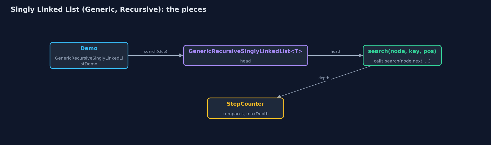
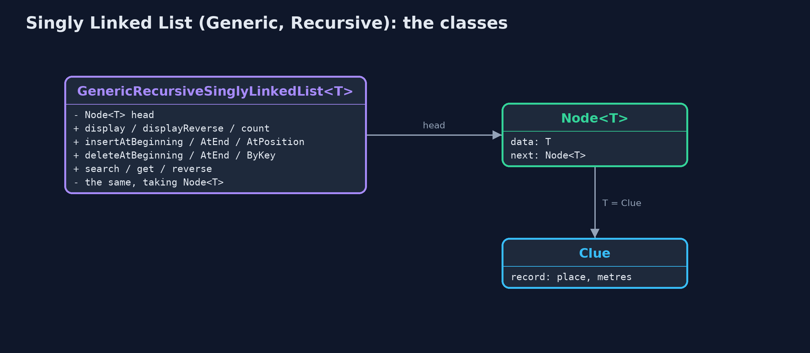
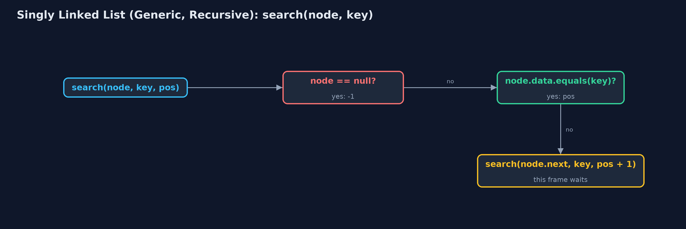
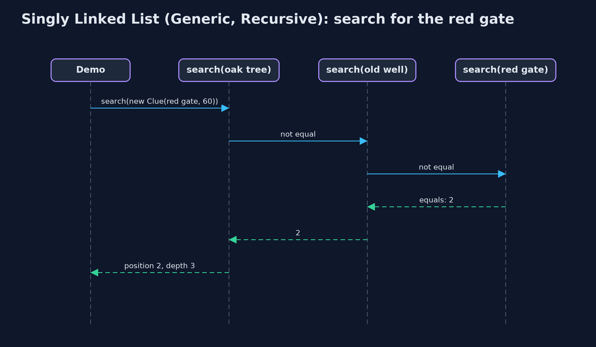

Singly Linked List (Generic, Recursive)
The generic recursive singly linked list holds any type T in Node<T>s, matches with equals, and writes every walk as a recursion on node.next, returning the new first node when it changes the list; the time is that of the loop version and the extra space is one frame per node visited.

search(new Clue("the red gate", 60)): each call asks equals, then passes the rest on
This project combines the two variations of the singly linked list. Like singly-linked-list-generic, the class has a type parameter T: each Node<T> holds a reference to a T and a next pointer, and elements are matched with **equals**. Like singly-linked-list-recursive, every walk is a recursion: a list is empty or a node followed by a smaller list, so each operation handles one node and calls itself on node.next, stopping at a base case; operations that change the list return the new first node. The time of every operation is that of the loop version; the extra space is one call-stack frame per node visited.
New to data structures? Read Start here first: it explains memory, references and counting steps in ten minutes.
The everyday idea
Picture the line of finders from the recursive list, one per clue, but now each holds a card that could be anything: a place, a number, a photograph. You hand the first finder a card and ask where the matching one is. They compare their card with yours; if it does not match, they pass the question to the next finder and wait. Each finder only needs to know how to compare two cards of that kind.
The worked example: A treasure hunt of Clue records, every operation recursive
The treasure hunt of Clue(place, metres) records, beside the same class holding distances and place names. The demo traces a recursive search, counts and prints backwards, inserts, deletes by key and at the end, reverses, and finally counts a million nodes recursively.
Why it exists
Generic recursive code over nodes is the form of almost every tree algorithm later in the course: insert(node.left, key), search(node.right, key), with compareTo or equals on a type parameter. Seeing it first on a list, where there is only one recursive call per node, makes those algorithms easier to read.
New words
| Word | What it means here |
|---|---|
| Node<T> | A node whose data is a T and whose next is the rest of the list. |
| equals | How nodes are matched: by contents. A record's equals compares its fields. |
| base case | The empty list, or the node being looked for. |
| returning the new first node | A changing operation returns the first node of the list it was given; the caller stores it in node.next or head. |
| recursion depth | The most frames on the call stack at once: one per node visited. |
What you will see, act by act
Run the demo and it tells the story in 5 acts, printing the real numbers that the tests check:
./gradlew run| Act | What it shows |
|---|---|
| 1. Recursion over Node<T>, with equals | A recursive search for a separately made Clue("the red gate", 60): not equal at the oak tree and the old well, equal at the red gate: position 2, 3 equals calls, depth 3. |
| 2. The same recursion, any type | count() on six Integers and six Strings goes 6 deep each; displayReverse prints the distances from the last to the first. |
| 3. Insertion, recursively | insertAtEnd goes 6 deep and replaces the empty list at the end with the new node; insertAtPosition(1) goes 1 deep and changes 2 pointers. |
| 4. Deletion and reversal, recursively | deleteByKey finds the red gate with 4 equals calls at depth 4 and returns node.next in its place; deleteAtEnd is 6 deep; reversing six Strings is 5 deep. |
| 5. The limit of recursion | Counting a million nodes recursively throws StackOverflowError. |
Each act is drawn step by step in the explained walkthrough and in the animation.
The operations, and what they cost
Time is given for the best, average and worst case in Big-O notation (START-HERE.md explains it by counting steps); the last column is what the demo actually counted, so every formula can be checked against a real number.
| Operation | What it does | Time: best / average / worst | Extra space (call stack) | Same operation as a loop | Steps counted in the demo |
|---|---|---|---|---|---|
| Display / display in reverse / count | This node and the rest, recursively | O(n) / O(n) / O(n) | O(n) | O(1) | depth 6 for 6 nodes |
| Insert / delete at beginning | Change head; no recursion | O(1) / O(1) / O(1) | O(1) | O(1) | 2 and 1 pointer changes |
| Insert at end / at position | Recurse to the empty list (or position 0 of the rest), return the new node | O(n) / O(n) / O(n) | O(n), O(pos) | O(1) | depth 6; depth 1 for position 1 |
| Delete at end | The last node is replaced by null | O(n) / O(n) / O(n) | O(n) | O(1) | depth 6 on 7 nodes |
| Delete by key | The matching call returns node.next (equals) | O(1) / O(n) / O(n) | O(n) | O(1) | 4 equals calls, depth 4 |
| Search / get | equals here, or search the rest | O(1) / O(n) / O(n) | O(n) | O(1) | 3 equals calls, depth 3 |
| Reverse | Reverse the rest, hang this node on its end | O(n) / O(n) / O(n) | O(n) | O(1) | depth 5 on 6 nodes |
Extra space is the memory an operation needs besides the structure itself. A loop needs a fixed amount, O(1); a recursive operation needs one call-stack frame for every call still waiting, so its extra space is the depth of the recursion.
The operations in code
Search with equals
/** Search: -1 in the empty list, pos if this node holds the key, otherwise search the rest. O(n). */
public int search(T key) {
return search(head, key, 0);
}
private int search(Node<T> node, T key, int pos) {
if (node == null) {
return -1; // base case: not found
}
steps.enter();
steps.compare();
int result = node.data.equals(key) ? pos : search(node.next, key, pos + 1);
steps.exit();
return result;
}Two base cases: the empty list (-1) and a match found with equals. Otherwise search the rest with position + 1. A separately made Clue with the same fields matches.
Deletion by key
/**
* Deletion by key: if this node holds the key, the list becomes the rest; otherwise delete from
* the rest. O(n) time and stack.
*
* @return true if a node was deleted
*/
public boolean deleteByKey(T key) {
boolean[] found = new boolean[1];
head = deleteByKey(head, key, found);
return found[0];
}
private Node<T> deleteByKey(Node<T> node, T key, boolean[] found) {
if (node == null) { // base case: not found
return null;
}
steps.enter();
steps.compare();
Node<T> result;
if (node.data.equals(key)) { // base case: skip this node
found[0] = true;
steps.pointer();
result = node.next;
} else {
node.next = deleteByKey(node.next, key, found);
result = node;
}
steps.exit();
return result;
}The call whose node matches returns node.next in its place; the caller stores it in its own next, and the node is skipped. No prev pointer is needed.
Insertion at the end
/** Insertion at the end: the end of the empty list is a new node; otherwise insert into the rest. O(n). */
public void insertAtEnd(T data) {
head = insertAtEnd(head, data);
}
private Node<T> insertAtEnd(Node<T> node, T data) {
if (node == null) { // base case: reached the end
steps.pointer();
return new Node<>(data, null);
}
steps.enter();
steps.step();
node.next = insertAtEnd(node.next, data);
steps.exit();
return node;
}The empty list at the end is replaced by new Node<>(data, null). Each call stores the result in node.next and returns node.
Compared with related structures
The four singly-linked-list projects side by side (n nodes):
| Property | Generic, recursive (this) | Generic, loops | String, recursive | String, loops |
|---|---|---|---|---|
| Element types | any T | any T | String | String |
| Insert / delete at the beginning | O(1) | O(1) | O(1) | O(1) |
| Walks (search, count, at end) | O(n) time and stack | O(n) time, O(1) space | O(n) time and stack | O(n) time, O(1) space |
| Matching | equals | equals | equals | equals |
| A million nodes | StackOverflowError | fine | StackOverflowError | fine |
The code
src/main/java/com/jk/explore/singlylinkedlistgenericrecursive/
├── Clue.java One clue of the treasure hunt: a type of our own, to show that the generic list holds any type
├── GenericRecursiveSinglyLinkedList.java A generic singly linked list, holding data of any type {@code T}, whose operations are written recursively
├── GenericRecursiveSinglyLinkedListDemo.java Tells the story of the generic, recursive singly linked list in five acts, printing the real counts and the real depth of every recursion
├── Lines.java The demo's printed lines, kept in one {@code StringBuilder} so the tests can check them
├── Node.java A node of a generic singly linked list: the data it holds, of any type {@code T}, and a pointer to the next node
└── StepCounter.java Counts what a linked-list operation costs: traversal steps (following one next pointer), comparisons (checking one node's data against a key), and pointer changes (setting one pointer)Test
./gradlew test20 tests in DemoRunsTest, GenericRecursiveSinglyLinkedListTest. Every number the demo prints is asserted, and nothing depends on the clock, so every run gives the same result.
Common mistakes
| The mistake | What goes wrong | The fix |
|---|---|---|
| Not storing the returned node | insertAtEnd(node.next, data); without node.next = never links the new node. | node.next = insertAtEnd(node.next, data); and head = ... at the top. |
Matching with == | An equal object made elsewhere is not found. | Use equals. |
| No base case for the empty list | node.data on null throws NullPointerException. | Check node == null first. |
| Recursing over long lists | A million nodes overflow the call stack. | Use the loop version for long lists. |
Try it yourself
- Easy. Write a recursive
boolean contains(Node<T> node, T key). What are its two base cases? - Medium. Write a recursive
int totalMetres(Node<Clue> node)as a static method outside the generic class. Why can it not be an instance method ofGenericRecursiveSinglyLinkedList<T>? - Harder. Write a recursive
Node<T> removeAll(Node<T> node, T key)that deletes every node equal tokey, returning the new first node. What does it cost?
The answers are in docs/exercises.md, below the questions, so they are not given away.
When to use it
- Learning the generic recursive style used for trees.
- Short lists, or operations whose work is on the way back, such as display in reverse.
When not to
- Long lists: one frame per node overflows the call stack. Use
singly-linked-list-generic.
Where you have already met this
singly-linked-list-genericandsingly-linked-list-recursive.- Generic recursive methods such as
<T> int count(Node<T> node)in textbooks.
Technologies and versions
| Technology | Version | Used for |
|---|---|---|
| Java | 25 | the code (toolchain set in build.gradle; Gradle fetches JDK 25 if it is missing) |
| Gradle | 9.8.0 (wrapper) | build and run, nothing to install |
| JUnit | 6.1.3 | the tests |
| videokit | course tool | the narrated video and animation: Piper en_US-amy-medium, speed 0.8, longer pauses (the amy-slow voice) |
Learning material
| Document | What it is for |
|---|---|
| Start here | the ideas every project relies on |
| Problem statement | the situation and what the project must show |
| Prerequisites | what you need to know first |
| Singly Linked List (Generic, Recursive), explained | every act, picture by picture |
| Animated walkthrough | the structure changing step by step, narrated |
| Cheat sheet | the whole structure on one page |
| Exercises and answers | practice, easy to harder |
| Session guide | a one-hour lesson |
| Specification | what this project must be true of |
How the pieces fit
Public operations pass head to private recursive methods over Node<T>.

The classes
Public operations, and the recursive versions that take a Node<T>.

How the data moves
Two base cases, then a call on the rest.

Who calls whom, in order
Three calls; the third matches with equals.

Video
video/singly-linked-list-generic-recursive-explained.mp4 (with .m4a audio and .srt subtitles) is built by video/build_video.sh. Rendered media is not committed.
Where this sits
Part of the data structures course, in arrays-and-lists.